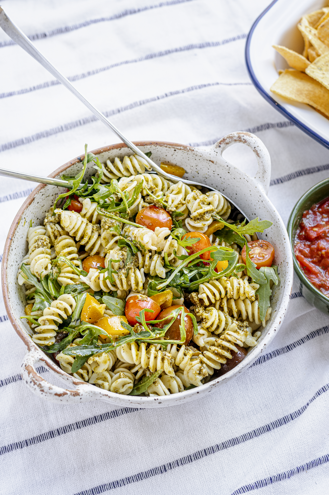

Receta seleccionada

Pasta pesto con tomates cherrys
Dificultad: Fácil
Tiempo de preparación: Medio
Categoría: Almuerzo
Presupuesto: $$
Ingredientes:
- 100g de pasta
- 50g de queso parmesano
- 20g de nueces
- 1 diente de ajo
- 100ml de aceite de oliva
Instrucciones:
- Hervir la pasta según las instrucciones del paquete.
- En una licuadora, mezclar el queso parmesano, nueces, ajo y aceite de oliva hasta obtener una salsa homogénea.
- Escurrir la pasta y mezclarla con la salsa pesto.
- Servir y disfrutar.
Tags:
#Pasta #RecetaFácil